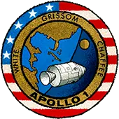
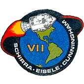
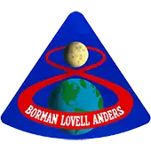
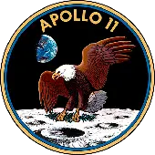

La carrera espacial se da en el contexto de la Guerra Fría entre los bloques Occidental y Oriental, liderados por Estados Unidos y la Unión de Repúblicas Socialistas Soviéticas respectivamente. Esta
carrera, que parte en 1957 y termina en 1975, supuso el esfuerzo paralelo de las dos potencias líderes por llegar más lejos en la exploración del espacio, desde poner en órbita un satélite artificial hasta
pisar el satélite natural de la Tierra.
El inicio de la carrera espacial se hizo efectivo con el lanzamiento soviético del primer satélite, Sputnik 1, en octubre de 1957. Estados Unidos aplicó medidas inmediatas para intentar
alcanzar el logro Oriental sin mucho éxito. Pero el 25 de mayo de 1961, el Presidente John F. Kennedy anunció que antes de que terminara la década se enviaría un hombre a la Luna, para traerlo de vuelta a
salvo.
INICIO DEL PROGRAMA APOLO
El programa Apolo fue el proyecto espacial desarrollado para cumplir con el desafío de llevar a un hombre a la luna. Previo a las misiones con descenso proyectado a la superficie lunar, se realizaron
pruebas de distintos sistemas de vuelo.

Apolo 1
27 de enero de 1967
Durante una prueba en la plataforma de lanzamiento un incendio terminó con la vida de tres astronautas.
Apolo 4
9 de noviembre de 1967
Esta prueba debía ser el primer lanzamiento tripulado. Sin embargo, tras el accidente del Apolo 1, se decidió realizar esta misión sin tripulación a bordo.
Apolo 5
22 de enero de 1968
Fue la segunda misión no tripulada del Programa Apolo. Tenía como objetivo penetrar en la atmósfera terrestre con éxito.
Apolo 6
4 de abril de 1968
Última misión no tripulada. Un fenómeno conocido como “efecto pogo” daño dos motores Rocketdyne J-2. Esto provocó que durante la tercera etapa no se pudiera alcanzar la velocidad translunar
correcta.

Apolo 7
11 de octubre de 1968
Primera misión oficial tripulada del Programa Apolo. Se hicieron los primeros usos de los trajes Apolo y fue la primera transmisión de televisión en directo.

Apolo 8
21 de diciembre de 1968
Primera misión tripulada en salir de la órbita terrestre y orbitar la Luna. Los tres astronautas se convirtieron en los primeros en ver la Tierra de manera completa.
Apolo 9
3 de marzo de 1969
Primera prueba de acoplamiento al módulo lunar. Es el módulo que se utilizó para explorar la superficie de la Luna.
Apolo 10
18 de mayo de 1969
Ensayo general para el alunizaje. Llegaron a descender a 15.6 km de la superficie lunar, se tomaron fotografías de posibles lugares de alunizaje.

Apolo 11
16 de julio de 1969
Esta misión lleva a Neil Amstrong a marcar la primera huella humana en la Luna. A esta misión le siguen las de Apolo 12, 13, 14, 15, 16 y 17.
Tras el incidente de Apolo 1 se continuaron las pruebas de lanzamiento en modo automático en los Apolo 4, 5 y 6. Luego, hubo dos ensayos tripulados en órbita terrestre en Apolo 7 y 9. Finalmente dos
misiones solo orbitales a la luna en Apolo 8 y 10.
APOLO 11
Un gran paso para la humanidad
La Ida y vuelta del Apolo 11
El viaje con el que finalmente el hombre puso al fin los pies en superficie lunar
inició con el despegue del Saturno V desde la plataforma de despegue Cabo cañaveral en el Estado de Florida, EE.UU, el 16 de julio de 1969, y se extendió por ocho días, hasta el amerizaje del Módulo
de Mando en el océano Pacífico el día 24.
Esta gran expedición, no estuvo exenta de problemas. El día 20 de Julio, cuando se realizaban las maniobras para
llegar al punto de descenso un problema en uno de los programas introducidos en el ordenador de la nave provocó que el módulo superara la velocidad programada para ubicar el punto de alunizaje, hecho que
pudo haber provocado la cancelación de la misión. Sin embargo, los astronautas lograron manejar la situación y evitar caer en un cráter que habría causado serios daños a la nave, y terminaron aterrizando a
unos 20 km del sitio inicial.
DESPUÉS DEL APOLO 11
APOLO 13: UN FRACASO EXITOSO
Las siguientes misiones después del Apolo 11 debían posarse sobre la superficie lunar. Todas lo lograron, exceptuando Apolo 13 que no pudo concretar su meta debido a la explosión del tanque de oxígeno
líquido en el módulo de servicio. Por fortuna la tripulación regresó a salvo.
créditos: NASA
El accidente se produjo a las 55:54:53 horas de misión, Swigert informó 26 segundos después, transmitiendo la icónica frase “Okay, Houston, we've had a problem here” (Bien, Houston, hemos tenido un
problema aquí).
Sin oxígeno, el módulo de servicio no podía funcionar, por lo que tuvieron que trasladarse al módulo lunar como impensado bote salvavidas. Aunque este estaba diseñado para mantener a dos hombres
durante dos días, se improvisó para que pudiera mantener a tres hombres durante cuatro días.
Elegir la ruta de regreso a la Tierra fue vital. A pesar de que los obstáculos eran considerables, el mando de control decidió que la nave espacial rodearía la Luna, utilizando su gravedad como impulso
para acortar el tiempo de viaje y llegar a la Tierra. Finalmente, y en contra de todo pronóstico,
tras una misión de 142 horas con 54 minutos y 41 segundos, los astronautas lograron llegar a salvo. Decenas de millones de espectadores vieron el aterrizaje de la nave en el océano Pacífico Sur por
televisión.
APOLO 15: LUNAR ROVING VEHICLE
El Apolo 15 fue la primera de las misiones Apolo capaz de completar un mayor tiempo de permanencia en el satélite y lograr una mayor movilidad en la superficie usando un vehículo de exploración llamado
“Lunar Roving”.
créditos: NASA/David R. Scott
La NASA tenía nuevas aspiraciones para el futuro, buscaba la forma de aumentar la movilidad de los astronautas en la superficie lunar. Para lograr tal objetivo, se decidió que llevar un vehículo a
la luna era la mejor opción. Sin embargo, este debía cumplir con varios requisitos para poder sobrepasar las distintas dificultades que esta misión implicaba.
Este vehículo debía ser lo suficientemente liviano para lanzarse con la carga útil de Apolo, pero también lo suficientemente resistente para atravesar todo tipo de terrenos, y funcionar a
temperaturas extremadamente bajas. Tenía que estar pensado para los trajes voluminosos que ocupan los astronautas y para su fácil descarga en la Luna.
Componentes del Rover
El Rover final fue construido por la empresa norteamericana Boeing y cumplió con estas estrictas especificaciones. Era un vehículo propulsado eléctricamente que pesaba 480 libras en la Tierra (80
libras en la Luna), podía cargar aproximadamente el doble de su propio peso y moverse a una velocidad máxima de aproximadamente 8,6 millas por hora. Cualquiera de los astronautas podía manipular con un
voluminoso guante puesto.
APOLO 17: GEOLOGÍA LUNAR
créditos: NASA/Eugene Cernan
Apolo 17 fue el último alunizaje y la primera misión en incluir a un científico en su tripulación para hacer una inspección de la geología y muestreo de materiales y características de la superficie
lunar. En esta Expedición de la Luna se recolectaron rocas lunares junto a una muestra de la superficie lunar que se analizaría recién 50 años más tarde.
Las rocas lunares recogidas se pueden dividir en tres grandes grupos:
Basaltos
Apollo 17 basalt 75015
créditos: Lunar and Planetary Institute
El basalto se compone principalmente de los minerales plagioclasa y piroxeno y se forma a partir de lava fundida. Estos basaltos se formaron a partir de
material que se derritió a profundidades de al menos 130 a 220 kilómetros y luego subió a la superficie antes de solidificarse.
Brechas
Apollo 17 sample 76215
créditos: Lunar and Planetary Institute
Son fragmentos de rocas fusionadas debido al impacto de asteroides y cometas en la luna. Las brechas encontradas por el Apolo 17 provienen del impacto de Imbrium que ocurrió entre 3.830 y 3.910
millones de años atras y el impacto de Serenitatis, cual su fecha es incierta.
Rocas de la corteza de
las tierras altas
Apollo 17 sample 78235
créditos: Lunar and Planetary Institute
Rocas raras lunares, que incluyen la norita, troctolita y dunita. Muchas de estas rocas se formaron en la mitad inferior de la corteza lunar durante la solidificación del océano de magma de la
Luna. Estas rocas se formaron hace 4200 y 4500 millones de años (el sistema solar se formó hace unos 4560 millones de años).
LOS TRIPULANTES DE LAS MISIONES APOLO
Los viajes de las misiones apolo
Para el programa Apolo la gran mayoría de los astronautas seleccionados para viajar
fueron veteranos de los programas Mercury y
Gemini
. Todas las misiones estuvieron a cargo de alguno de ellos y cuatro de los veteranos que en las primeras misiones Apolo viajaron como pilotos terminaron siendo comandantes en los últimos viajes.
Algunos de los astronautas más famosos son:
Neil A. Armstrong
Comandante Gemini 8 y Apolo 11
Fue el primer humano en pisar la luna y pronunció la célebre frase “Es un pequeño paso para un hombre, pero un gran salto para la humanidad”.
James Lovell
Piloto Gemini 7 y Apolo 8 Comandante Gemini 12 y Apolo 13
Astronauta con más tiempo en el espacio que cualquier otro al momento de realizar la misión Apolo 13. También es uno de los tres astronautas que han viajado dos veces a la luna y el único de
ellos que no llegó a alunizar en ella.
Alan Shepard
Piloto Programa Mercury Comandante Apolo 14
Fue el primer norte americano en el espacio en mayo de 1961. Era previsto que comandara la primera misión del proyecto Gemini pero empezó a tener episodios de mareos y náuseas extremas y fue
diagnosticado con la enfermedad de Ménière. Volvió para el Apolo 14 luego de operarse.
Harrison Schmitt
Piloto Apolo 17
Fue el primer y único astronauta-científico en pisar la luna. Era geólogo de profesión y fue el autor de la fotografía “La canica azul” una de las imágenes más reproducidas de la historia donde
se veía por primera vez la tierra completa e iluminada.
Eugene Cernan
Piloto Gemini 9A y Apolo 10 Comandante Apolo 17
Fue el último humano en pisar la luna y uno de los tres astronautas que viajaron en dos ocasiones a ella.
Treinta y dos fueron los astronautas que participaron del programa Apolo y cada uno de ellos tiene experiencias memorables por recordar. De todos ellos doce lograron caminar en la luna, otros doce
alcanzaron sólo a estar alrededor de ella, cinco orbitaron la tierra y tres murieron en un trágico accidente un mes antes de su vuelo.
APOLO-SOYUZ
FIN DE LA CARRERA ESPACIAL
La misión Apolo-Soyuz en julio de 1975 fue la última del Programa Apolo y, por otra parte, esta misión logró el primer proyecto conjunto entre dos naciones en el espacio. La idea de este «apretón de
manos» espacial se inició tres años antes con el acuerdo firmado por el presidente estadounidense Richard Nixon y el premier soviético Alekséi Kosygin.
Con esta misión se visualizó el inicio del final de la carrera espacial y el final completo del programa Apolo, que bien teniendo planeado ambiciosas misiones futuras se quedó sin financiamiento y
sin la atención de los Estados Unidos.